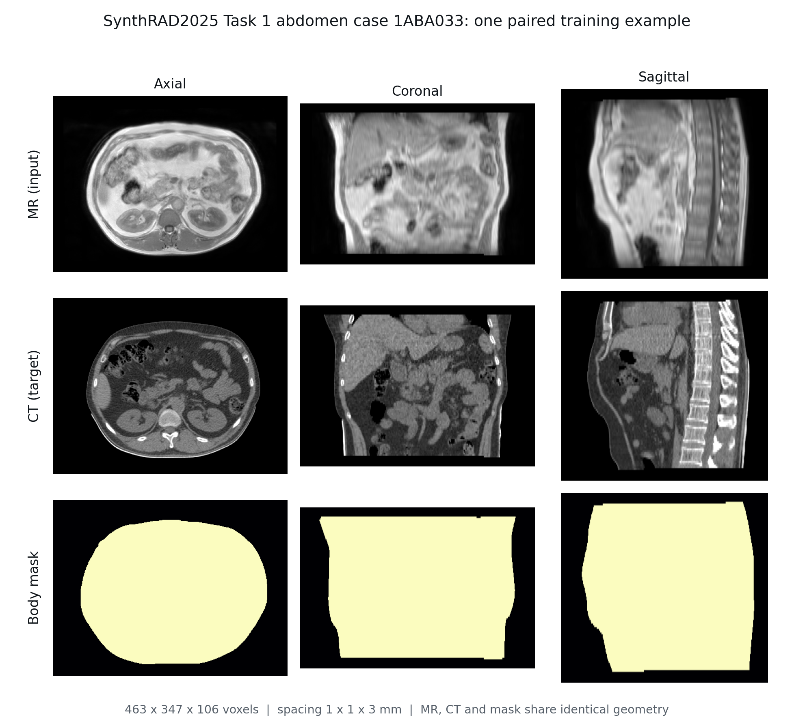
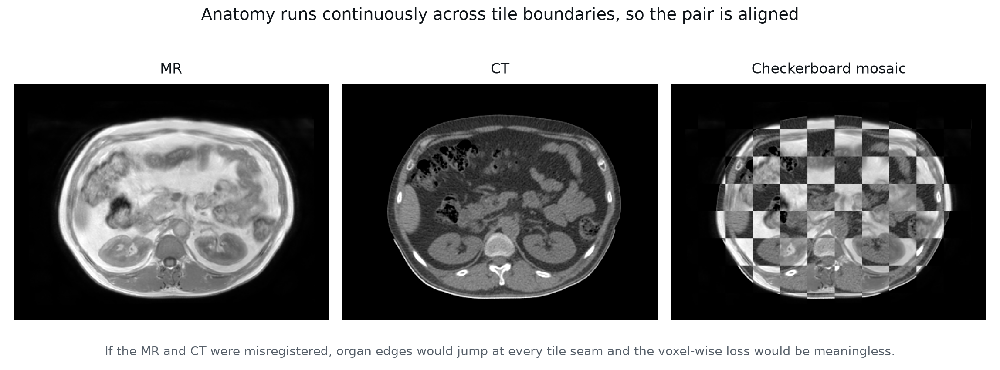
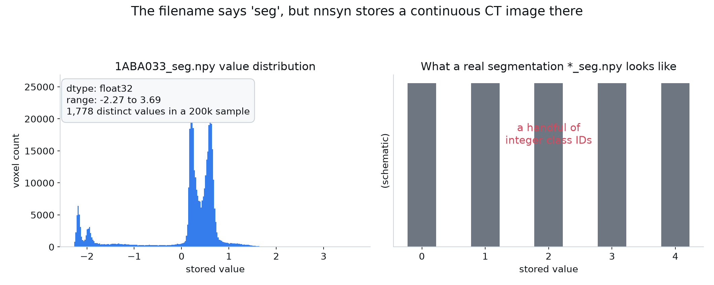
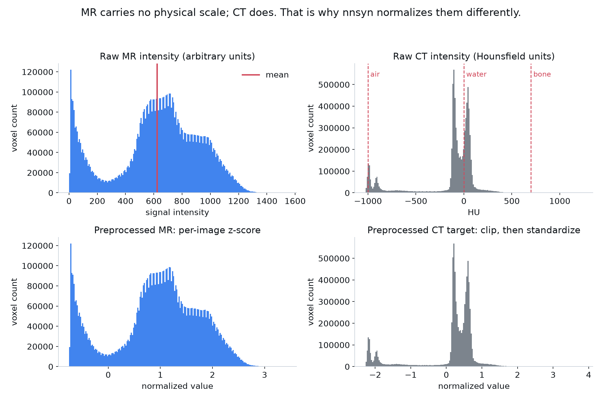
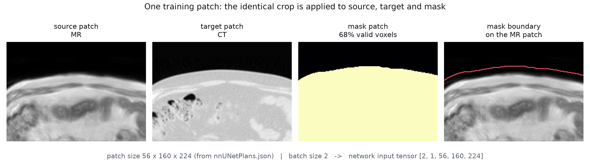
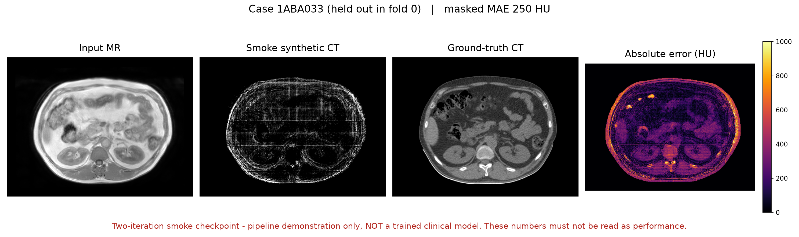

MRI
Strong soft-tissue contrast, no universal physical intensity scale.
Role here: network input.
A practical walkthrough of the aehrc/nnsyn repository
Follow one public 3D MRI–CT case through the files, experiment plan, network, losses, training, inference, and evaluation used by nnsyn.

How does nnsyn turn an MR volume into an evaluable synthetic CT?
Course map
The chapters follow the nnsyn workflow. We begin with the MRI-to-CT task, then follow the data through planning, preprocessing, the network, training, inference, and evaluation.
Clinical task
Clinical motivation
MRI gives excellent soft-tissue contrast without ionizing radiation, but its voxel values depend on the scanner and acquisition sequence. CT has a calibrated numerical scale: Hounsfield units describe X-ray attenuation and support tasks such as radiotherapy dose calculation.
An MRI-only workflow becomes possible if CT information can be estimated from the MRI. The model predicts a CT volume aligned with the MRI, with one estimated CT value at every voxel.
Strong soft-tissue contrast, no universal physical intensity scale.
Role here: network input.
Hounsfield units carry attenuation-related numerical meaning.
Role here: continuous regression target.
fθ(xMR) = ŷCTOtherwise voxel-wise error mixes registration error with synthesis error.

If the CT is shifted five voxels to the right, what does a voxel-wise loss measure?
Both synthesis error and misalignment. The target at a coordinate no longer represents the same anatomy.
Framework
What nnsyn actually is
Chapter 01 defined the task: use an aligned MRI to estimate a CT value at each voxel. nnsyn organizes the complete experiment around that task. It keeps the main nnU-Net workflow for measuring the dataset, creating a plan, training on patches, saving checkpoints, and reconstructing a full volume. It adapts that workflow so the network predicts continuous image values instead of segmentation classes.
| Task | Output tensor | Meaning at each voxel |
|---|---|---|
| Segmentation | [B, K, D, H, W] | K class scores |
| nnsyn synthesis | [B, 1, D, H, W] | one continuous target value |
The diagram gives the high-level view. In the code, these jobs are divided across several files. The map below shows which file answers each course question.
nnsyn_preprocessing.pyHow do paired files become trainable arrays?
experiment_planning/How are patch, spacing, and architecture chosen?
nnUNetTrainer_nnsyn.pyWhat changes from segmentation to regression?
nnsyn_loss_map.pyWhat does the advanced loss compare?
nnsyn_predict_entrypoints.pyHow is inference wrapped and HU restored?
analysis/How are outputs evaluated and visualized?
The dataset fingerprint determines the experiment plan, and the plan determines which network is built and how it is trained.
Data & plans
Data preparation and self-configuration
Self-configuration starts with organized data. For each case, nnsyn matches the MRI, reference CT, and mask using one case ID. It then converts these files into normalized arrays and creates a training plan from the measured dataset properties.
INPUT_IMAGES/ TARGET_IMAGES/ MASKS/ LABELS/ optional
Paired medical-image files.
imagesTr/ labelsTr/ dataset.json
nnU-Net naming and identity.
CASE.npy CASE_seg.npy CASE_mask.npy nnUNetPlans.json
Normalized arrays and plan.
fold_0/ checkpoint_*.pth training_log*.txt
Weights and run evidence.
CASE_seg.npy contains continuous CT values.The name suggests a segmentation map. Inspecting the stored array and the preprocessing code shows that nnsyn reuses this nnU-Net target slot for the normalized CT; the contents are not class labels.

1ABA033_seg.npyMeasure image size, spacing, orientation, and intensity.
Choose spacing, patch, batch, kernels, strides, and network depth.
Normalize and, when needed, resample every case consistently.
Build the planned network and sample planned patches.
It is not an official SynthRAD2025 dataset number and has no clinical meaning. Three public abdomen cases were enough to exercise every pipeline stage, but not enough to train or evaluate a useful synthesis model.
Normalization changes the numerical scale without changing the anatomy. For case 1ABA033, the complete MR volume has mean 277.33 and standard deviation 368.80. After preprocessing, the stored MR array has mean approximately 0 and standard deviation 1. In this three-case subset, the selected spacing already matches the data, so resampling is effectively a no-op; normalization is the visible change.

Does z-score normalization make MRI values into Hounsfield units?
No. It creates a stable numerical range for learning. HU restoration applies only to the predicted CT using saved CT statistics.
Architecture
Model and tensor flow
The plan from Chapter 03 fixes the patch size and network depth. The network then uses one MRI patch to predict one CT value at every location in the matching output patch. A single MRI voxel is usually not enough, so the network also needs surrounding anatomy. The encoder builds this wider context by reducing spatial resolution while increasing the number of learned feature channels.
The decoder restores the original resolution. Skip connections bring higher-resolution encoder features directly to the matching decoder stages, so the output can combine broad anatomical context with precise boundaries. This is especially important for image synthesis because every output voxel must receive a continuous value.

The local smoke plan used a six-stage PlainConvUNet. nnsyn can also plan other architectures, including residual-encoder and MedNeXt variants.
Losses
What the model is asked to minimize
The network from Chapter 04 produces a CT patch. During training, the loss measures how far that prediction is from the reference CT and provides the signal used to update the network. MSE compares voxel values, masking limits the comparison to the body, and MAP also compares anatomical features.
The progression: MSE defines the numerical error → masking decides where that error can teach the network → MAP also compares anatomical features.
Baseline
MSE compares every aligned voxel. Squaring makes large errors matter more, but it gives no special meaning to the body region or anatomical structure.
It asks: are normalized voxel values close?
Mask support
For the full 1ABA033 volume, the body mask covers 44.15% of voxels. Individual training patches contain different body fractions. Multiplying by the mask makes outside-body terms zero, so those voxels do not produce gradients.
Why show this split? Masked MSE keeps the body region in the error numerator and sets the larger outside region to zero.
The repository still averages over all N patch voxels, not only Σmi foreground voxels. For one fixed patch, changing the denominator rescales the gradient without changing its direction. Across patches, however, different mask fractions change their relative scale and weighting.
repository: Σ masked error / Nalternative: Σ masked error / Σ maskIt asks: are values close in the selected body region?
Advanced trainer
Limg is the repository’s masked MSE. Lperc sums L1 differences between channel-normalized feature maps from several segmentor levels. The reference features are detached; the segmentor’s weights remain fixed. Gradients from the predicted branch travel back to the synthesis network.
The two terms have equal coefficients at w = 0.5, but that does not mean their numerical magnitudes or gradients are equal. The weight controls the mixture, not a guaranteed fifty–fifty effect.
It asks: are voxel values and anatomical representations both close?
| Model row | MAE ↓ | Dice ↑ | HD95 ↓ |
|---|---|---|---|
| resUnet-fold0 | 65.9640 | 0.7092 | 9.8844 |
| resUnet-MAP-fold0 | 64.5516 | 0.7436 | 8.2069 |
These are reported validation-leaderboard rows from the KoalAI algorithm description, not results from our smoke run and not a final-test benchmark. They illustrate why anatomical metrics may reveal changes that MAE alone does not.
See the public SASHIMI program entry for Team KoalAIIf w = 0.5, must perception loss and image loss contribute equally sized gradients?
No. The coefficients are equal, but the terms can have different scales and gradient magnitudes.
Training
From one update to a checkpoint
Once the loss is defined, training can update the network. Each iteration loads aligned patches, predicts normalized CT, computes the loss, backpropagates the error, and changes the weights. Validation and checkpoints record how the run progresses.
MRI, target CT, and optional mask patches.
MRI patch → predicted normalized CT.
Compute the selected synthesis loss.
Differentiate through the synthesis network.
Clip gradient norm at 12, then change weights.
Log, validate, and save checkpoints.
Repository baseline
Course smoke run
The baseline protocol is intended to learn. The smoke protocol is intentionally too short to support a quality claim.
Inference
Prediction and post-processing
Training produces a checkpoint that can predict one patch at a time. The full MRI is larger than that patch, so inference moves overlapping windows through the scan and blends their predictions into one normalized CT volume. The plan, trainer, fold, and checkpoint must match the training run so that the correct model is reconstructed.
Apply the training plan.
Run overlapping windows.
Combine patch predictions.
ŷHU = ŷ′σCT + μCT.
Set outside-body voxels as required.
Saved target statistics restore Hounsfield units. The body mask then defines the valid output region and the region used for masked evaluation.
The raw prediction contains values close to 0. Does that mean the synthetic CT is blank?
No. The network predicts standardized CT values, where 0 is near the training-set mean. Apply the stored CT mean and standard deviation before interpreting the image in Hounsfield units.
Evaluation
Numbers and images answer different questions
Inference produces a synthetic CT in Hounsfield units. Evaluation then asks how closely it matches the reference CT. Metrics summarize overall error, while image panels show where errors occur. Both are useful because either one can hide an important failure.
Read the metrics in three layers: MAE and PSNR assess CT intensities, MS-SSIM assesses visual structure, and Dice and HD95 assess anatomy derived from segmentations.
MAE = (1/N) ∑ |pi − ti|Average HU difference at the evaluated voxels. MAE = 100 HU means an average error of 100 HU per voxel. Lower is better.
PSNR = 20 log10(R / √MSE)Compares reconstruction error with the stated CT intensity range R. Higher means less error relative to that range.
MS-SSIM = lMα ∏ cjβsjγCompares brightness, contrast, and structural patterns from fine details to larger regions. Values closer to 1 mean more similar structure.
Dice = 2|A ∩ B| / (|A| + |B|)
HD95 = P95(surface distances)Dice measures region overlap: 1 is perfect. HD95 measures how far apart most boundaries are, usually in millimeters. Both require segmentations; Dice higher and HD95 lower are better.
Inspect multiple anatomical slices and include failures, not only the best-looking example.
Use the mask definition, HU restoration, metric implementation, and case split consistently. Otherwise two reported numbers may not describe the same experiment.
Hands-on
A verified public-data execution trace
The previous chapters describe the complete pipeline. We tested that pipeline on three public abdomen cases with a deliberately short run. Its purpose was to confirm that every stage connects, rather than to measure synthesis quality.
Dataset
3 abdomen casesDataset501Fold 0
2 train / 1 held out1ABA033 held out from updatesTraining
2 updates54.62 secondsInference
48 windowsabout 3 minutes
This run supports
This run does not support
Linux assumption: the trainer used SIGUSR1, which Windows does not provide. The local teaching path guarded this scheduler-specific behavior.
Fold assumption: three cases cannot support a default five-fold split with meaningful membership, so the teaching subset uses an explicit three-fold leave-one-out split.
Inference wrapper: nnsyn_predict parses options such as worker counts and TTA control but does not forward them to the lower-level predictor. The teaching script calls that predictor directly.
Visible seams: strong jumps coincide with internal tile boundaries, including y = 62, 160, 222, 285 and x = 80, 239. This is a useful view of sliding-window behavior, not a quality result.
Takeaways
Close the loop
The core task is continuous MRI-to-CT regression, not segmentation.
Self-configuration connects dataset properties to a reproducible plan.
nnsyn routes continuous CT through an inherited target slot.
MSE, masks, and MAP define progressively richer learning objectives.
A valid output needs matched inference, restored HU, metrics, and visual checks.
Knowledge check
Answer first, then open each card.
MRI intensity is acquisition-dependent; CT has calibrated HU related to X-ray attenuation. The target must be numerically meaningful.
Spacing, patch, batch size, stages, kernels, strides, and feature channels are recorded in the generated plan.
CASE_seg.npy not a segmentation map?nnsyn copies the preprocessed continuous target into an inherited target slot. The filename is inherited; the contents are continuous.
Masked errors are averaged over every patch voxel N, not divided by the number of foreground voxels.
It extracts multiscale anatomical features from predicted and reference CT while its own weights stay fixed.
It received only two updates. The run verifies connectivity, not learned quality, generalization, or challenge performance.
nnsyn adapts nnU-Net’s self-configuring medical-imaging pipeline from voxel classification to paired 3D image regression, then adds synthesis-specific data handling, losses, HU restoration, and evaluation.
Course materials
| Material | How it is used here | Source and terms |
|---|---|---|
| aehrc/nnsyn | Repository studied and executed; course code is tied to commit c3ba6fd8. | Australian e-Health Research Centre; Apache License 2.0. |
| nnU-Net | Planning, preprocessing, training, and inference infrastructure inherited by nnsyn. | Isensee et al.; see the upstream paper and repository. |
| SynthRAD2025 Task 1 | Three public abdomen MRI–CT cases and all medical-image figures. Raw scans are not redistributed. | Thummerer et al.; public data and derived figures remain subject to CC BY-NC 4.0. |
| KoalAI description | External MAP-loss validation rows in Chapter 05; these are not results from our run. | Xin et al., SynthRAD2025 algorithm description. |
| Course scripts and figures | Teaching-scale execution, evaluation, and visualization created for this course. | AI assistance and human verification are described below. |
AI assistance
OpenAI Codex and Anthropic Claude assisted with course organization, English revision, HTML/CSS, and the supporting Python and PowerShell scripts. They were also used during Windows/CUDA troubleshooting and the final consistency review.
Human verification and responsibility
Zaiyou He ran the reported preprocessing, smoke training, and inference steps; inspected the logs, checkpoints, images, and numerical values; and made the final technical and editorial decisions. Codex and Claude did not generate the medical images or experimental measurements; these came from the public dataset and the reported nnsyn run. Jun Ma provided supervision and course feedback. The authors take responsibility for the final material.
References
c3ba6fd8 (accessed 31 July 2026). github.com/aehrc/nnsyn